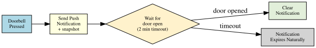

The problem with most doorbell automations is that the notification lingers on your phone long after you have already answered the door. This post sets up an automation that sends a push notification with a doorbell camera snapshot when someone rings, then automatically clears it the moment the door is opened -- so your notification shade stays clean.
Components
- Reolink doorbell (PoE or Wi-Fi) -- integrated via the official Reolink integration
- Sonoff SNZB-04 door/window sensor -- a Zigbee sensor paired via Zigbee2MQTT or ZHA
- Home Assistant with the mobile companion app installed on your phone (iOS or Android)
Push Notification Setup
Install the Home Assistant Companion App on each phone that should receive doorbell alerts (available on iOS and Android). Once logged in to your HA instance, the app registers a notify service automatically.
To find your service name go to Developer Tools > Actions, search for notify.mobile_app and you will see one entry per registered device -- for example notify.mobile_app_morgan_iphone. Use this name in the automation below.
Notifying Multiple People
To send to several phones, define a notification group in configuration.yaml:
notify:
- platform: group
name: household
services:
- service: mobile_app_phone_one
- service: mobile_app_phone_two
Then use notify.household in the automation. The clear notification must also target the group so it dismisses on all devices.
Integrations Setup
Reolink
Add the Reolink integration from Settings > Devices & Services > Add Integration. Enter the doorbell's IP address, username, and password. Once added it exposes:
binary_sensor.<name>_visitor-- goesonwhen the doorbell button is pressedcamera.<name>-- live and snapshot camera feed
Set a static IP for the doorbell on your router so the integration never loses it.
Sonoff SNZB-04 via Zigbee2MQTT
Pair the sensor by holding the reset button until the LED flashes. In Zigbee2MQTT it appears as a contact sensor. Home Assistant autodiscovers it as:
binary_sensor.<name>_contact--off= closed,on= open
If you are using ZHA the entity name follows the same pattern.
How the Automation Works

- Doorbell button pressed -- triggers the automation
- Push notification sent immediately with a camera snapshot attached
- Automation waits up to 2 minutes for the door sensor to report open
- If the door opens -- a second notification with the same
tagclears the first from the device - If nobody answers within 2 minutes -- the notification stays until manually dismissed
The Automation YAML
In Home Assistant go to Settings > Automations > New Automation > Edit in YAML and paste:
alias: Doorbell -- Smart Notification
description: >
Send a doorbell snapshot notification. Clear it automatically if the door
is opened within 2 minutes.
mode: single
max_exceeded: silent
triggers:
- trigger: state
entity_id: binary_sensor.reolink_doorbell_visitor
to: "on"
actions:
- action: notify.mobile_app_your_phone
data:
title: "Doorbell"
message: "Someone is at the door"
data:
tag: doorbell_alert
image: /api/camera_proxy/camera.reolink_doorbell
ttl: 0
priority: high
- wait_for_trigger:
- trigger: state
entity_id: binary_sensor.front_door_contact
to: "on"
timeout:
minutes: 2
continue_on_timeout: true
- if:
- condition: template
value_template: "{{ not wait.timed_out }}"
then:
- action: notify.mobile_app_your_phone
data:
message: "clear_notification"
data:
tag: doorbell_alert
Replace notify.mobile_app_your_phone with your actual notify service name and binary_sensor.front_door_contact with your Sonoff sensor entity.
Camera Snapshot in the Notification
The image field uses the HA camera proxy URL. This serves a still image from the camera at the moment the notification is generated. On iOS the image appears as a thumbnail; long-press expands it. On Android it appears in the expanded notification view.
If you want a fresh snapshot captured at doorbell-press time rather than the proxy serving a cached frame, take an explicit snapshot first:
actions:
- action: camera.snapshot
target:
entity_id: camera.reolink_doorbell
data:
filename: /config/www/doorbell_snapshot.jpg
- action: notify.mobile_app_your_phone
data:
title: "Doorbell"
message: "Someone is at the door"
data:
tag: doorbell_alert
image: /local/doorbell_snapshot.jpg
/config/www/ maps to /local/ in the HA web server, making the image accessible to the companion app.
mode: single
The automation uses mode: single with max_exceeded: silent. This means if the doorbell is pressed again while the automation is already waiting (someone rings twice), the second press is ignored. This prevents duplicate notifications and competing clear triggers.
If you want each ring to send a fresh notification, use mode: restart instead -- the wait timer resets on each press.
Testing
- Press the doorbell button -- notification should arrive within a second or two with the camera image
- Open the front door -- notification should disappear from your lock screen and notification shade
- Press the doorbell but wait 2 minutes without opening the door -- notification should remain
Check Settings > Automations, open the automation, and use Traces to step through exactly what happened on each trigger.
Extending the Automation
- Announce on smart speakers -- add a
media_playerTTS action before thewait_for_trigger - Record a clip -- trigger
camera.recordon the Reolink entity when the bell rings - Night mode -- wrap the notify action in a condition that checks
input_boolean.night_modeto suppress notifications after midnight - Actionable notifications -- add action buttons to the notification (Unlock door, Ignore) using the companion app's actionable notification feature